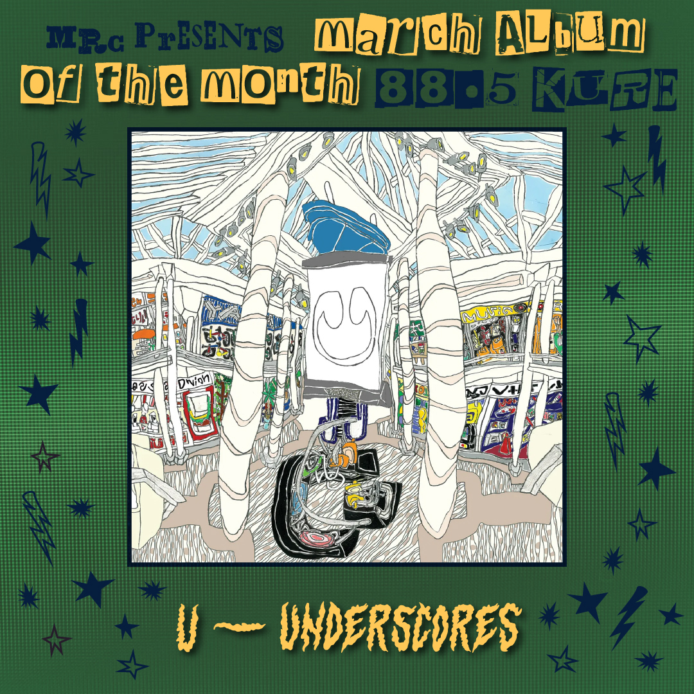

Written By JFitz and Spenser Leise
Jfitz:
“Underscores invented music. Music is over. She finished it. Everyone can go home now.” -My friend Noa In the city of Bloomington, Minnesota, there is a roughly 4-mile-wide zone on the north side of the Minnesota River, bordered by two state highways. In this area, you’ll find what could honestly be described as a shrine to American commerce, as I-494 separates the MSP Airport from an IKEA, several hotels, a Hewlett-Packard Enterprise building (which I was lucky enough to spend a night in prior to its opening!), and the city’s crowning jewel, the Mall of America. To say that MoA is a point of pride for Minnesotans is an understatement, as the sprawling entertainment complex is the largest of its kind in North America, serving dual purpose as a mall and a tourist attraction for 32 million people a year. My friends and I have made a habit of visiting the mall every year, usually spending a full day in its interior without actually buying much of anything, and it’s often been a tradition of my family to visit the mall and nearby Minnehaha Falls before our flight came in at the airport. These days are memorable for an overwhelming sense of contrast, as the beautiful scenery around the river and falls is juxtaposed with the glare of LEDs against the tile, glass, and all- white surfaces that surround me at the mall and airport. The entire area around the mall has a strange, ethereal ambiance that’s hard to describe, as high consumerism gives way to something dreamlike, a hyperextension of luxury aesthetics that borders on parody. This atmosphere has always been a familiar environment for me, but on Underscores’ new album, it’s a creative blueprint. To analyze the full creative output of April Harper Grey is to explore the history of popular music. Her prior two albums under the Underscores name reveled in a giddy genre ambivalence, oscillating between future bass, R&B, hyperpop, pop-punk, emo, and indie rock while maintaining a distinct production style and lyrical perspective inspired by adolescence and small-town ennui. This creative vision reached ambitious new heights on Wallsocket, an oddball concept album about a small Upper Michigan town, which used a bizarre ARG and string of music videos to comment on the intersection of class, identity, and religion with a distinctly transgender perspective. The success of Wallsocket propelled a meteoric rise in status, assisted by collaborations with the likes of Danny Brown, umru, and Oklou, but on her third studio album, she seems intent on exploring this rise to fame with a more limited frame of reference. In writing and recording for U, Grey took direct inspiration from malls, airports, and other liminal corporate environments, including both the Stonestown Galleria in San Francisco and a two-week stint at the Mall of America. The album’s artwork and branding draw conscious inspiration from these locations, relying both on clean, corporate iconography within promotional material and a messier, more abstract view of these spaces through the art of illustrator Ochiai Shohei. The result is an album that feels nostalgic for half-remembered environments and aimless in the present, reflecting a greater sense of insecurity and a longing for human connection as your eyes adjust to the bright lights of stardom. Gone are the wild genre fusions and overarching narratives of her prior work; the album stands at only 34 minutes, with each track serving as an isolated vignette of romance and friendship. The album’s production, while no less maximalist than her prior work, feels more narrow in its focus, trading rock for a retro-pop aesthetic, inspired by 2000s hitmakers like The Neptunes and Timbaland as well as second-gen k-pop groups (check out the choreography in the Do It music video). These pop elements are balanced with elements of dubstep and EDM, as Grey takes inspiration from her idols such as Skrillex and Virtual Riot to build some of the most cathartic bass drops in modern electronic music. While the final product is less gritty and more polished than previous albums, it never comes off as shallow, as the EDM soundscape allows her abilities as a producer to come into full focus. Throughout each of the 9 tracks, she surgically weaves melody, percussion, and ear candy around some of the most hypnotic basslines I’ve ever heard in pop music, and the detail present within each mix gives credence to the headphone-centric visuals of the album, displaying potential as both a rewarding home listen and a collection of anthemtic dancefloor classics. Although every Underscores album feels like a personal reflection of Grey’s life and outlook, the lack of specific characters or storylines on U leads to a final product that feels significantly more intimate and vulnerable. Much of the album’s runtime is dedicated to the interplay between fame and love, as she writes about her struggle to build meaningful connections with others and maintain her current trajectory. On Hollywood Forever, the album’s first non-single track, the bass glides effortlessly beneath lyrics that seem stuck halfway between shock and indifference over newfound luxury, reflecting a desire not to alienate her loved ones by accepting a new lifestyle. This sort of unstable relationship is a primary focus of the album, as she leans into self- destructive habits out of a desire for contact (“The Peace”) or laments her incompatibility with a significant other (“Lovefield”). Other moments see her view intimacy itself as a calculated risk, as she seeks commitment from a potential partner while pointedly rejecting the idea of a traditional relationship (“Do It”). In many ways, Grey seems resigned to an artificial type of love, a landscape just as transactional and superficial as a mall or hotel, yet this apprehension is matched with moments of true romance. On “Music”, she describes being caught off guard and made vulnerable by feelings of infatuation, while other tracks display this infatuation as a blinding force in her life (“Bodyfeeling”) or an obstacle she has to face on the path to closure (“Wish U Well”). The album ultimately ends without a sound resolution to this internal conflict, yet the record speaks to Grey’s increased confidence and self-assurance in front of an audience, as she strips away the heavy vocal processing of her previous work and seeks an open mind from the listener (“Tell Me (U Want It)”). The future is still uncertain for Underscores: in a period of immense change for electronic music, she has been appointed by many as the figurehead for a new wave of experimental EDM, alongside contemporaries like Jane Remover and Ninajirachi, while last year’s collaboration with Yves positions her as a legitimate K-pop idol. However, regardless of what labels or honorifics people try to assign her, her sound never arrives sounding as half-formed or artificial as the spaces she takes inspiration from. U is the sound of an artist holding on to vulnerability in the midst of immense change, and the honestly with which that struggle is portrayed on this album gives me faith that she’ll continue to forge her own path, with headphones turned up to full volume. 9/10
Spenser:
At the start of 2025, April Harper Grey, professionally known as underscores, seemed to be up to something. Although her last project dropped on September 23, 2023, she was featured on the cover of New Musical Express in March, discussing the raving success of her second studio album Wallsocket, the fear of making new music, and even an unreleased collaboration with the Brooklyn-based DJ, Umru. This oddly timed article left a lot unanswered. However, answers seemed to be on the way, with her being scheduled to perform both weekends of Coachella 2025. “Coachella’s gonna be fire,”(1) she raved in her NME interview. At the time, what was assumed to be a comment to hype up her set ended up being so much more. When Coachella came around, she stole the spotlight at the Sonora tent, sharing unreleased songs with danceable production, infectious hooks, and a brand-new vocal delivery. Coachella answered everything: She had reinvented herself once again, and new music was officially on the way. Fast-forward from that moment to now: April 2026, where she’s appeared on the cover of NME again and announced a headlining tour behind her newest project, a project with a single-letter album title: U U is underscores 3rd studio album and does not depart from the hyperpop production of Fishmonger and the grungy maximalism of Wallsocket, but instead blends it with EDM, pop, and digicore to create what she called the “pop bible.”(2). To the KURE 88.5 music committee, this pop bible is such a treat to listen to. underscores fully dives into her pop bag, but keeps the jackhammer basslines and the tongue-in-cheek lines that defined her previous work. This short, punchy nine-song tracklist has endless earworms to get stuck in your head, and a little stylistic something for any pop fan. The tracklist starts with a pop greeting, “Tell Me (U Want It),” where light dissonance and a driving kick define this hypnotic song about ambition and desire. Originally released as the 3rd single leading up to the album’s release, this track stands out as a sonic treat, welcoming you to a new palette of production that runs through the whole tracklist. The track fades seamlessly into track two, “Music,” which features a rapidly repeating 808, an incredible Skrillex-inspired drop, and tongue-in-cheek lyrics that are bound to get stuck in your head. Originally released in June of 2025, underscores shows her production versatility on this track, building a minimalist, repetitive bassline that the whole song explodes and retracts around, adding and removing elements as it progresses towards its intoxicating, euphoric ending. Through its tracklist, U tackles themes of grappling with fame, and no track shows this more than “Hollywood Forever.” The track is a reference to Hollywood Forever Cemetery, a famous Los Angeles Cemetery where numerous deceased celebrities are buried. In the song, underscores dialogues with a critic of her participation in hypercapitalist and consumerist constructs. The chorus of the song resolves this by noting that we all participate in the construct, whether we like it or not. The track’s driving bass heartbeat sidechain compresses the other elements, creating an incredibly encapsulating rhythm and adding to the song’s ambiance and themes. The gripping thematic lyricism and bouncing production make this a clear favorite of the KURE 88.5 Music Review Committee. Moving into “The Peace,” we’re reminded of the other theme of U: Love and affection. To a ballad of her own vocal chops, underscores recounts a relationship through different smoke breaks, using the Japanese cigarette brand “The Peace” in the literal sense and as “the peace” between her and this person. The song is a masterclass in writing, storytelling, and relational commentary. Then there’s “Innuendo (I Get U)”, like the definition of the word Innuendo: this one tells you a lot without telling you, and so does the production. Being minimalist but unquestionably impactful up until the climax of the song, where something almost feels realized by underscores, which comes out in the music as one of the album’s most explosive drops. This one is truly one of the most cathartic tracks on U, making it exceptionally memorable. A slower song then follows with “Lovefield.” Diving deeper into the theme of love, this track mourns an unrequited love through an intimate, emotional ballad. Compared to every other track on this album, the processing on underscores’ voice is minimal, helping the lyrics resonate that much more. Although the lyrics and themes are not only relatable but crushing, the track’s ending feels flat, featuring another cathartic explosion of sound that feels frustrated, but almost too bombastic. In addition, the emotional weight of this track is sandwiched between two of the album’s highest-energy tracks, which feels a little jarring. Lovefield then drops into the undeniable energy of “Do It.” This track has been talked about multiple times at KURE, with it and its remix being in Standout Singles, so this will be brief. It is one of the catchiest pop songs of the year. The production is stellar, using another pumping baseline combined with what sounds like chops of a strumming guitar. It’s truly a stunning song. As the tracklist starts to wind down, “Bodyfeeling” offers an easy-listening pop track that feels straight out of the pop golden age of the 2000s. With an infectious hook and production I can only describe as romantically cosmic, this track delivers an ambiance worth checking out. The album closes with “Wish U Well,” a track that finds underscores discussing having to move on before she’s ready. The song starts with a collection of sounds that almost feel nostalgic. Computer boot-ups, radio tunings, and intercom chimes fade into a beautiful guitar line, developing into something that a Boyband could deliver vocals on. With its reminiscent production and relatable subject matter, the track is a perfect pop closer. to this hard-hitting tracklist. U is a pop album worth checking out. It takes underscores’ hyperpop and digicore influences and turns them into a fully realized pop opus. The songs are extraordinarily memorable and catchy, delivering stellar production, vocals, and lyricism. A couple more songs would have been appreciated, but are not needed for U to be a great time.
93/100